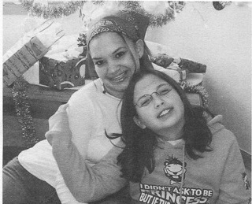
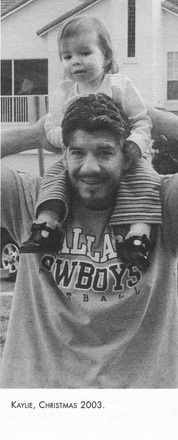
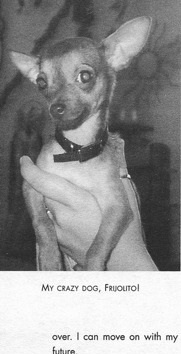

Книги
КнигиЭпилог
Перевод Александра Суменко для VSplanet.net
Не стоит и говорить, моя жизнь стала процветать. Но и у розы есть шипы. Ничто не приходит с легкостью. Все, что досталось мне в последние четыре года, было следствием промысла Божьего и долгой, упорной работы.
Я встретил множество препятствий, но после каждого становился сильнее. Я считаю, что это и есть настоящее определение силы — способность встать после падения и идти дальше с высоко поднятой головой. Учиться на ошибках и стремиться быть лучше.
Я стараюсь поддерживать позитивный взгляд на жизнь, что не всегда дается мне легко. Вера в Иисуса поддерживает мои силы. А когда я уже не верю в себя, я благодарю Бога за то, что в меня верят другие: Викки и дочери, Крис и Дин, Винс, Стефани и Хантер.
Трезвость — это подъем в гору. И когда ты чувствуешь себя победителем, начинаются проблемы. Как только ты считаешь, что контролируешь себя, — ты в беде. В этот момент происходит худшее.
Мне приятно слышать, что люди гордятся тем, что я побеждаю свою зависимость. Я улыбаюсь, но в то же время укрепляю оборону. Я горд своими достижениями, но постоянно напоминаю себе: «Не зарывайся».
Такое отношение приводит людей к срыву, как только они начинают думать, что победили свои привычки. Я вынужден бороться с зависимостью каждый день. Наверное, я должен гордиться достигнутыми результатами, но я еще не прошел весь путь.
Я все еще новичок в этом. Я не употребляю вредных веществ лишь несколько лет. Этот Эдди Герреро прожил на свете лишь 3 года. И провел эти 3 года, учась жить новой жизнью. Я сталкиваюсь с чем-то новым каждый день. Эти чувства захватывают меня, и я думаю: «Что это такое? Что со мной происходит?»

Шол и Шерилин, Рождество, 2004 г.
Стало намного легче, но это не значит, что я могу ослабить защиту. Возможно, это самое трудное — знать, что каждый день будет новый поединок.
Я продолжаю бороться из-за множества положительных вещей в моей жизни: отношения с Викки и детьми, работа, вера. Я не сразу разглядел эти плюсы. Мне пришлось побыть трезвым некоторое время, чтобы понять, что, без всяких сомнений, хорошее перевешивает плохое.
Иногда бывает тяжело. Я возвращаюсь из очередного тура, понимая, что не отключился от рестлинга. Тогда мне приходится проводить время в тишине: я молюсь и медитирую, чтобы освободить разум.
Еще один положительный шаг в моей жизни: я больше не называю себя наркоманом, теперь я восстанавливающийся наркоман. Вы живете согласно своим убеждениям. Если у вас негативное отношение, то и жизнь будет такой же. Я предпочитаю быть оптимистом.

Кайли, Рождество, 2003 г.
Признаю, я много раз падал, часто сам сбивая себя с ног. В течение стольких лет я жил в таком хаосе и путанице, что боялся принять хоть что-то хорошее в свою жизнь. Но вечно пинать себя под зад нельзя. Я понял, что Господь не хочет, чтобы я оставался в плену у своих ошибок. Ведь такая жизнь ничем не отличается от жизни пьяницы. Ты все равно в рабстве. Болезнь живет в тебе, нашептывая на ухо, что ты виноват, что ты недостоин.
В общем, я восстанавливаюсь. Каждый день. Важно признавать, что я изменился. Я пытаюсь встать на другую сторону своей зависимости.
По милости Божьей, я никогда не вернусь назад. Я обещал Викки, обещал себе, обещал детям. Никогда больше алкоголь не коснется моих губ. Больше я не буду под кайфом. Я сдержу свое слово, как тяжело бы мне ни было.
Разгребание проблем, оставшихся от старого образа жизни, также включало обыденные вещи, например, мое ужасное финансовое положение.
Вернувшись в WWE, я стал получать лишь треть от прежней зарплаты. По существу, я начинал с нуля. После этого я не мог расплачиваться с налоговой целых два года. Они хотят быть уверены, что ты твердо стоишь на ногах, прежде чем позволят рассчитать план платежей.
Я бы никогда не выбрался из финансовой ямы без нового финансового аналитика Фреда Хоффмана. Фред не только фантастический бухгалтер, но и выдающийся человек. Он столько сделал для меня: наладил финансовое состояние, помог стать более организованным. Кроме того, он подсказывает мне, как поступать правильно для будущего семьи, для поступления дочерей в колледж, для своей старости. Он прошел со мной огонь и воду.
Самый умный мой поступок заключался в том, что я не стал бегать от налогового управления. Иногда было тяжело, потому что казалось, что я работаю бесплатно. Но я рад, что справился с этим, потому что теперь, по милости Божьей, все кончено. Я могу продолжать жить и думать о будущем.

Мой безумный пес Фруолито!
Я выплатил все долги. У меня осталось не так много имущества, но я снова свободен. Я прожил с этой ношей почти 4 года, но теперь я избавился от этого груза. Все закончилось хорошо.
Наверное, абсолютно прошел лишь один симптом моей зависимости: любовь к тратам. Поверьте, лучше всего от этого недуга лечит отсутствие денег!
Я пытаюсь жить широко. Естественно, продолжаю платить церковную десятину, а также стараюсь дарить много подарков: жене, детям, братьям и сестрам. В чем смысл денег, если их не тратить?
Разница же в том, что теперь я понимаю, что важна не стоимость подарка. Особенным подарок делает задумка, а не количество потраченных денег. Я выучил этот урок, лишь потратив много времени и денег.
Покупка вещей для себя — это другая история.
Мне тяжело было принять, что я заработал что-то, что я заслуживаю купить себе новый телевизор или новую машину. Став трезвым, я лишь через 2 года начал покупать что-то просто для себя.
Жена даже стала пилить меня на этот счет: «Давай, купи что-нибудь себе. Ты заслужил это».
Один из важных уроков, выученных мной, — ничто не длится вечно. Поэтому невероятно важно наслаждаться особыми моментами в жизни, например: обновление наших с Викки клятв или ощущение, когда толпа носит тебя на руках после выигрыша пояса чемпиона.
Спустя пару месяцев после WrestleMania XX я уступил пояс чемпиона WWE Джону «Брэдшоу» Лэйфилду после пары жестких и кровавых битв на PPV.
Признаюсь, по многим причинам я не был готов тащить компанию на своих плечах. Прямо сейчас мои внутренние усилия направлены на сохранение трезвого, размеренного, спокойного образа жизни. Наступит время, когда я буду полностью готов снова взять на себя пояс чемпиона. И когда такое время придет, обещаю, я буду нести этот титул с подобающими ему честью и силой.
Сейчас я понимаю, что звание бывшего чемпиона WWE также налагает свою ответственность. С этого момента я должен быть лидером в раздевалке. Сначала я нервничал из-за этого, но, оглядываясь на свой жизненный опыт, я полагаю, что могу привнести много знаний и мудрости.
Сейчас ветераны, вроде меня, нужны больше, чем когда-либо. Бизнес поменялся. Когда я начинал, 90 процентов рестлеров в раздевалке были ветеранами и только 10 процентов — новичками. Сейчас все наоборот.
Как ветеран, проживший целую жизнь в этом беспощадном и прекрасном бизнесе, я считаю, что мне есть чем поделиться с молодежью. Я хочу направлять их. Я не могу изменить людей — это задача Господа. Моя роль — прожить жизнь наилучшим образом, доступным мне. Я верю, что исполняю свое предназначение в рестлинге, будь это матч или разговоры с парнями в раздевалке.
Теперь во мне горит новый огонь. Я хочу вернуть дань индустрии, помогая другим. Мое сердце принадлежит и всегда будет принадлежать Иисусу. Но я считаю, что еще многое могу дать этому бизнесу. Существует много способов отдать свое сердце. Я хочу отдавать свое сердце в раздевалке, помогать парням, чтобы никому не приходилось пройти через то, что прошел я.
И речь не только о знании рестлинга, я говорю о самой жизни. У Господа был план, когда Он благословил меня заняться этим делом. Я верю, что Он хочет, чтобы я делал все возможное, чтобы помочь парням, которые могут иметь те же проблемы. Я хочу быть рядом с ними, когда им нужна помощь. Хочу быть их другом.
Когда Иисус пришел в этот мир, Он не остался в монастыре или церкви. Он пошел в народ и стал проповедовать. Он научил нас выходить в мир и распространять Его евангелие — любовь. Это истинное сообщение Иисуса — распространение любви. Я знаю это в глубине души, потому что Он так поступил со мной.
Работая с молодыми людьми, которые только пришли в этот бизнес, я могу следовать примеру Христа и распространять любовь.
Я много думаю об отце в эти дни, как он любил учить молодых рестлеров. Ему было крайне важно передать основы бизнеса следующему поколению. Он был ценителем основ. Мой отец был представителем настоящей старой школы.
Во многом эти же уроки я пытаюсь передать новичкам. В рестлинге можно прожить долго только, имея хороший фундамент. И (это касается не только рестлинга) нужно иметь крепкий дух и четкую цель, чтобы давление жизни не сломило тебя.
Если, Боже упаси, со мной произойдет нечто ужасное и я не смогу продолжить работу, я могу честно сказать, что удовлетворен усилиями, приложенными мной за прошедшие несколько лет. Я выложился в полной мере, отдал все сердце. Теперь я могу в любой момент уйти, осознавая, что сделал все по максимуму.
Отец сразу научил меня, что рестлинг больше индивидуальностей, больше каждого из нас. Когда я уйду на пенсию, шоу продолжится. Другой займет мое место. Так все и происходит.
Лучше всего это выразил Стив Остин: «Мы просто маленькие шестеренки в большой машине». В этом заключается одна из тяжелых истин нашего бизнеса — если одна шестеренка изнашивается, ее заменяют другой, чтобы машина продолжала работать.
Когда закончится моя нынешняя роль, я начну играть другую. Я не смогу играть эту роль, когда мне будет, например, 45 или 55 лет.
Все равно трудно принять эту данность, ведь я прожил всю жизнь в этом бизнесе. Я воспитан рестлингом. И только им хотел заниматься с самого детства. Что делать, когда вы работаете над чем-то со всеми силами, вкладывая всю душу, а получая это, вдруг понимаете, что вы не так себе это представляли?
Сейчас я на распутье. Я не смогу жить жизнью рестлера всегда. Я должен понимать, что в моей жизни реально: Бог, семья, друзья. Недавно мне приснился сон об отце. Мы с ним были в ринге, окруженном сотнями рестлеров. «Все это нереально, — сказал он. — Посмотри на тех, кто рядом с тобой, на семью, и будь благодарен за это. Настала пора перестать бороться и начать жить».
Рестлинг остается моей страстью. Он является для меня естественным наркотиком, вторым после отношений с Иисусом. Но, кроме рестлинга, есть более важные причины жить. У меня три прекрасных дочери, которым я всегда буду нужен, даже когда они вырастут. У меня любимая жена, с которой я проживу всю жизнь, пока мои дни не закончатся.
Я должен быть благодарен за многие вещи в моей жизни. И не только за семью и карьеру. Будучи суперзвездами WWE, мы получаем великолепную возможность встречаться с людьми, которым в жизни повезло меньше, чем нам. Будь это больные дети или контуженые ветераны войн, я понимаю, что мне есть, за что благодарить жизнь. Человек обычно смотрит только на свою жизнь, но чтобы почувствовать окружающий мир, надо расширить границы своего мировоззрения.
Даже в своем мире, мире рестлинга, я должен напоминать себе, что у меня все хорошо. Не у каждого есть счастливая, здоровая семья, не каждого дома ждет целая жизнь. Наш стиль жизни не очень подходит для брака, и многие парни не благословлены так же, как я.
Во многих смыслах, я самый везучий человек в мире. Мне дали второй шанс. Я вернул себе карьеру, семью, дух. Мне представился шанс вернуть все, что я потерял.
Надеюсь, моя история, мое сообщение поможет другим людям. Я не Бог — я лишь продолжение Его милости и Его славы. Я продолжение Его силы. Я буду горд, если моя жизнь сподвигнет кого-нибудь стать лучше. Если пережитая мной боль поможет кому-то избежать такой боли, я буду рад. Если это поможет миллиону человек, я буду счастлив.
Но главный человек, которому это должно помочь, это я. Мне нельзя это забывать. Если я буду стараться помочь миру и забуду про себя, я снова упаду. Я должен всегда это помнить. Если выбрать лишь одно сообщение, которое я могу передать миру, я скажу, что зависимость победить нельзя. Ты встаешь каждое утро с надеждой, что сегодня снова сможешь ее преодолеть. Но она никогда не прекращается. Это каждодневная борьба.
Жизнь полна сюрпризов. Я не знаю, что будет завтра. Я просто радуюсь каждому прожитому дню. Конечно, жизнь была бы намного проще, если бы мы заранее знали, что случится. Но так не будет никогда.
Нужно просто жить и верить.
День за днем.